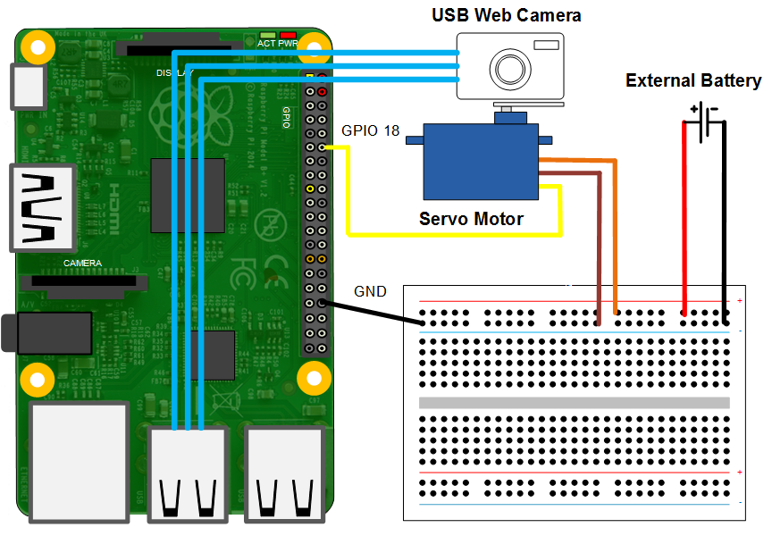

Surveillance Camera with Android™ Device
This example shows how to use Raspberry Pi® hardware and an Android device to build a surveillance camera.
Contents
Introduction
In this example you will learn how to create Simulink® models that stream video captured on a Raspberry Pi hardware board to an Android device. A USB camera attached to servo motor connected to the Raspberry Pi board captures the raw video. The generated Android App displays the video captured from Raspberry Pi board. In the Android App, you also have a slider to control the camera angle, a button to inverses the video image, a button to detect the edge and a slider to adjust the brightness of the video image.
Prerequisites
- This example requires Computer Vision System Toolbox™.
- Complete the Blink LED Control from Android Device example.
Required Hardware
To run this example you will need the following hardware:
- Raspberry Pi board
- Android smartphone/tablet
- A compatible USB camera
- (Optional) Servo motor (tested with TowerPro SG-5010)
- (Optional) Battery pack (4 AA Battery pack for TowerPro SG-5010)
- (Optional) Breadboard and jumper wires
Task 1 - Set up hardware
In this task, you will set up servo motor(optional) and USB web camera with Raspberry Pi board.
1. (If you don't have a servo motor, skip this step.) Secure USB camera on the shaft of the servo motor and secure the servo motor on a surface.
2. Plug the USB interface of USB web camera into the USB port of Raspberry Pi board
3. (If you don't have a servo motor, skip this step.) Wire the servo motor as shown in the simplified circuit diagram below. For the servo motor and battery pack, read the specification of your servo motor and install battery pack properly. Make sure to connect the ground of battery pack to the ground of Raspberry Pi board. Improper installation of the servo motor and battery pack will damage Raspberry Pi board. In the circuit schematic below, the servo motor control line is connected to GPIO 18 pin.

Task 2 - Configure models
In this task you will configure models for Raspberry Pi hardware and Android device.
Assume that Simulink Support Package for Android Devices is installed and the hardware network connection between Raspberry Pi board and your Android device are set up. Otherwise, refer to LED Control from Android Device example for setup steps.
1. Open the Android model. Double click the UDP Send block and update the Remote IP address parameter with your Raspberry Pi IP address.
2. Open the Raspberry Pi model. Double-click Video Send Subsystem, update UDP Send Red, UDP Send Blue and UDP Send Green blocks with the IP address of your Android device. If you have a servo motor, double click Standard Servo Write and update Minimum pulse duration and Maximum pulse duration based on your servo motor.
Task 3 - Run models on Raspberry Pi hardware and Android device
1. Click Deploy to Hardware button of Raspberry Pi model to run this model on Raspberry Pi hardware.
2. Click Deploy to Hardware button of Android model to run this model on your Android device.
3. Observe the image captured from Raspberry Pi board display on the screen. Slide the Camera Pan Angle and observe the change of camera angle. Slide the Brightness Level and observe the brightness change. Press Image Inversion button to invert image color. Press Edge Detection button to detect edges.
Other Things to Try
Add more functionalities to surveillance camera, such as
- Add motion sensor in Raspberry Pi hardware to trigger video only when motion detected.
Summary
This example showed you
- Raspberry Pi hardware sends video data to Android device through UDP.
- Android device receives video data through UDP and display on screen.
- Android device uses slider to control view angle and send the control information to Raspberry Pi hardware.
- Raspberry Pi receives control information and drive a servo motor.
- Model video processing algorithms: image inversion, edge detection and brightness control.